G'VINE PATROCINA EL 40º CUMPLEAÑOS DE PAULA ECHEVARRIA ORGANIZADO POR LA REVISTA ELLEG'VINE PATROCINA EL 40º CUMPLEAÑOS DE PAULA ECHEVARRIA ORGANIZADO POR LA REVISTA ELLEG'VINE PATROCINA O 40º ANIVERSÁRIO DE PAULA ECHEVARRIA ORGANIZADO POR ELLE MAGAZINEG'VINE SPONSORS THE 40 th BIRTHDAY OF PAULA ECHEVARRIA, ORGANIZED BY ELLE MAGAZINE
El pasado 14 de septiembre, la Finca El Chaparral de Madrid, acogió la fiesta de gala que ELLE organizó para celebrar el 40º cumpleaños de la famosa actriz Paula Echevarría.
G´Vine Gin fue patrocinadora del evento y obsequió a los asistentes con deliciosos cócteles y por supuesto, con su sofisticado G´Vine&Tonic, con el que los asistentes tuvieron la ocasión de brindar por Paula.
Además, G´Vine decoró varios de los espacios de la finca con motivos de la marca, diseñados exclusivamente para la ocasión. Los elementos más impactantes fueron las espectaculares botellas Night Edition con el nombre de la actriz y con el que fue el hastag de la fiesta: #HAPPY40PAULA. Las botellas sirvieron para iluminar tanto el exterior como el interior de la finca, tiñendo de verde cada rincón.
La noche fue todo glamour, con cóctel de altura, música sin fin y muchos brindis en una noche llena de sorpresas, en la que la homenajeada sopló las velas ante amigos y familiares.
La lista de invitados al evento fue excepcional. Los diseñadores Jorge Vázquez, Vicky Martín Berrocal y Pelayo Díaz, los actores Aitana Sánchez-Gijón, Asier Etxeandía, Marta Hazas, Fernando Andina, Toni Acosta, Alfonso Bassave, Juanjo Artero, Patricia Montero y Cecilia Freire, y los empresarios Emiliano Suárez, Raquel Meroño y Elena Tablada, entre muchos otros.
Con motivo de su regalo de cumpleaños, la marca obsequió a la Paula Echevarria con una edición limitada personalizada exclusivamente para ella.
El pasado 14 de septiembre, la Finca El Chaparral de Madrid, acogió la fiesta de gala que ELLE organizó para celebrar el 40º cumpleaños de la famosa actriz Paula Echevarría.G´Vine Gin fue patrocinadora del evento y obsequió a los asistentes con deliciosos cócteles y por supuesto, con su sofisticado G´Vine&Tonic, con el que los asistentes tuvieron la ocasión de brindar por Paula.Además, G´Vine decoró varios de los espacios de la finca con motivos de la marca, diseñados exclusivamente para la ocasión. Los elementos más impactantes fueron las espectaculares botellas Night Edition con el nombre de la actriz y con el que fue el hastag de la fiesta: #HAPPY40PAULA. Las botellas sirvieron para iluminar tanto el exterior como el interior de la finca, tiñendo de verde cada rincón.La noche fue todo glamour, con cóctel de altura, música sin fin y muchos brindis en una noche llena de sorpresas, en la que la homenajeada sopló las velas ante amigos y familiares. La lista de invitados al evento fue excepcional. Los diseñadores Jorge Vázquez, Vicky Martín Berrocal y Pelayo Díaz, los actores Aitana Sánchez-Gijón, Asier Etxeandía, Marta Hazas, Fernando Andina, Toni Acosta, Alfonso Bassave, Juanjo Artero, Patricia Montero y Cecilia Freire, y los empresarios Emiliano Suárez, Raquel Meroño y Elena Tablada, entre muchos otros.Con motivo de su regalo de cumpleaños, la marca obsequió a la Paula Echevarria con una edición limitada personalizada exclusivamente para ella.Em 14 de setembro, a Finca El Chaparral em Madri, foi o local de comemoração da festa de 40º aniversário da atriz Paula Echevarría.G'Vine Gin foi o patrocinador oficial do evento e presenteou os convidados com deliciosos cocktails com o seu sofisticado G'Vine & Tonic. Além disso, G'Vine decorou diversos espaços da festa com a temática da marca, desenhados exclusivamente para a ocasião. Os elementos mais marcantes foram as garrafas da Edição Noturna com o nome da atriz e com a hashtag do evento # HAPPY40PAULA. As garrafas serviram para iluminar tanto o exterior quanto e o interior da La Finca, tingindo de verde todo o evento.A noite era puro glamour, dispunha dos melhores cocktails Gin&Tonic, muita música e uma noite repleta de surpresas, em que a homenageada soprou as velas diante de seus amigos e familiares.A lista de convidados para o evento foi excepcional. Designers Jorge Vazquez, Vicky Martin Berrocal y Pelayo Diaz, atores Aitana Sánchez-Gijón, Asier Etxeandia, Marta Hazas, Fernando Andina, Toni Acosta, Alfonso Bassave, Juanjo Artero, Patricia Montero e Cecilia Freire, e empresários Emiliano Suarez, Raquel Meroño e Elena Tablada, entre muitos outros.Com a premissa de presentear Paula Echevarria, a marca a presenteia com a edição limitada da garrafas edição noturna, desenhadas exclusivamente para ela.On September 14th, La Finca El Chaparral in Madrid, hosted the gala party that ELLE organized to celebrate the 40th birthday of the famous actress Paula Echevarría.G'Vine Gin was the sponsor of the event and presented the guests with delicious cocktails and with its sophisticated G'Vine &Tonic, with which the attendees had the opportunity to toast for Paula.In addition, G'Vine decorated several spaces of the party with brand theme, designed exclusively for the occasion. The most striking elements were the spectacular Night Edition bottles with the name of the actress and with the party 39's hastag: #HAPPY40PAULA. The bottles served to illuminate both the exterior and the interior of the scene, dyeing green every corner.The night was full of glamor, with the best cocktails, endless music and a night full of surprises, in which the honoree blew the candles with her friends and family.The list of guests to the event was exceptional. The designers Jorge Vázquez, Vicky Martín Berrocal and Pelayo Díaz, the actors Aitana Sánchez-Gijón, Asier Etxeandía, Marta Hazas, Fernando Andina, Toni Acosta, Alfonso Bassave, Juanjo Artero, Patricia Montero and Cecilia Freire, and the entrepreneurs Emiliano Suárez, Raquel Meroño and Elena Tablada, among many others.On the occasion of her birthday gift, the brand presented Paula Echevarria with a Limited Edition customized exclusively for her.


 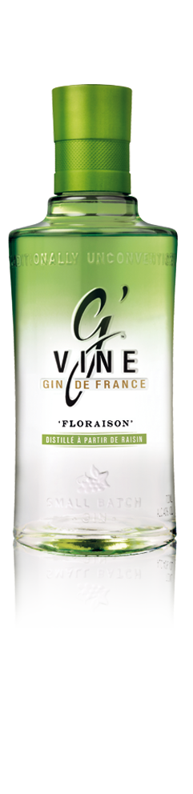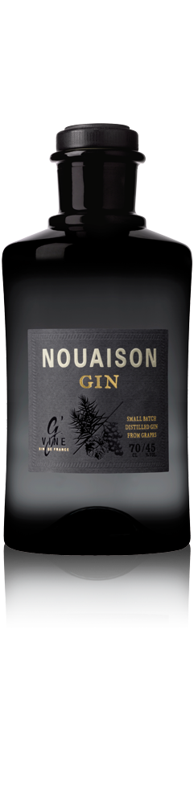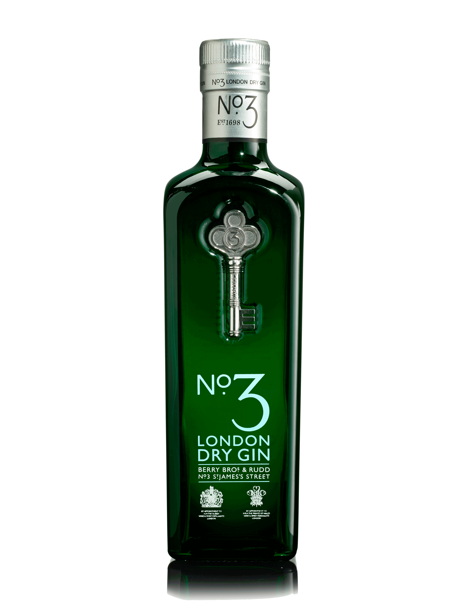
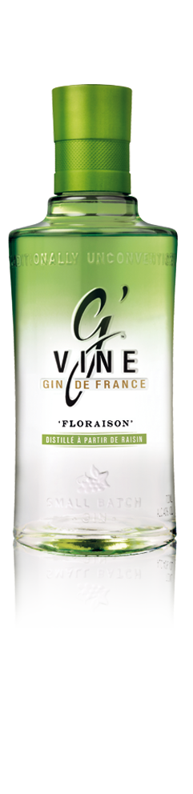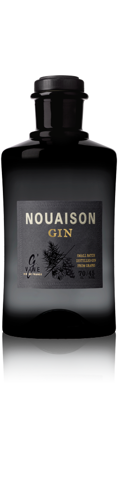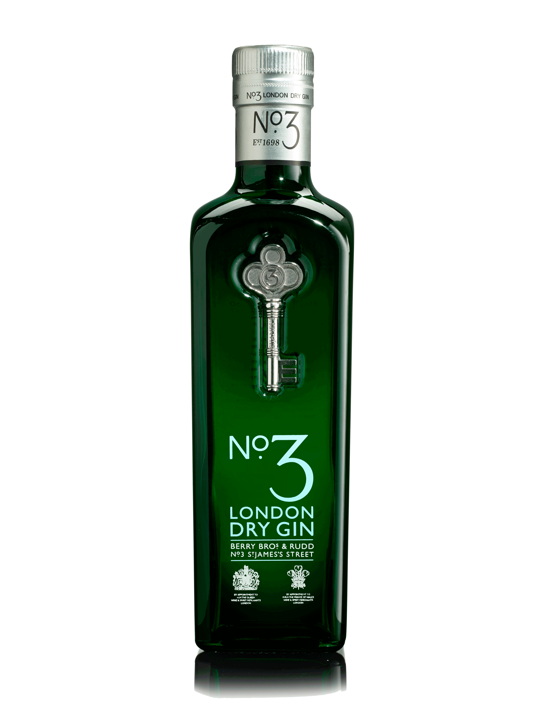 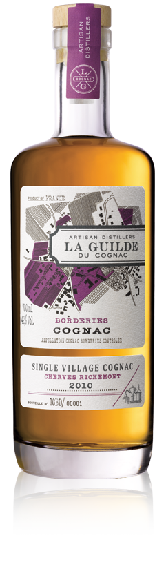
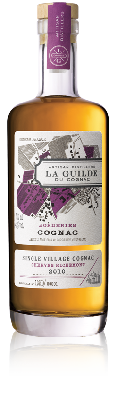
 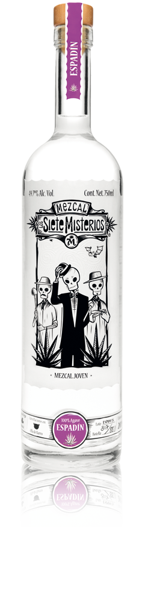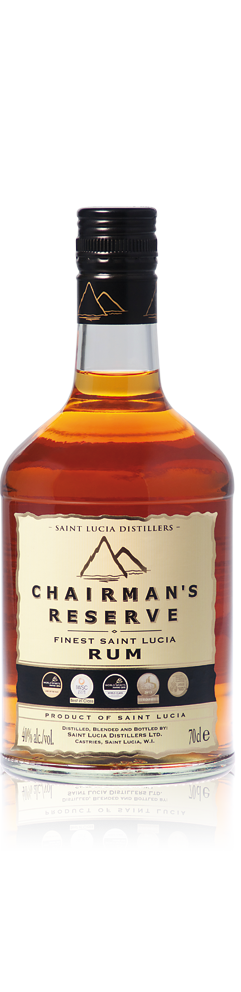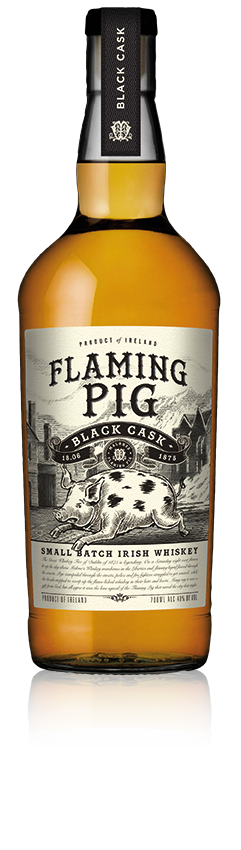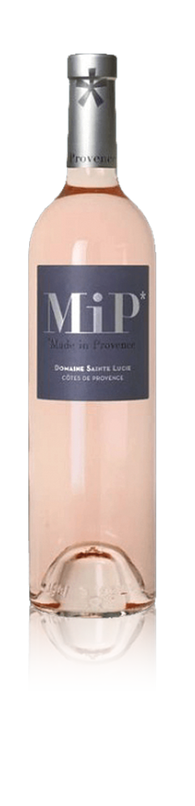
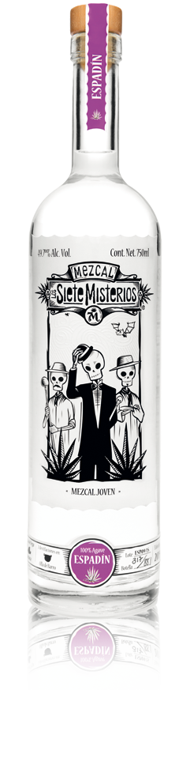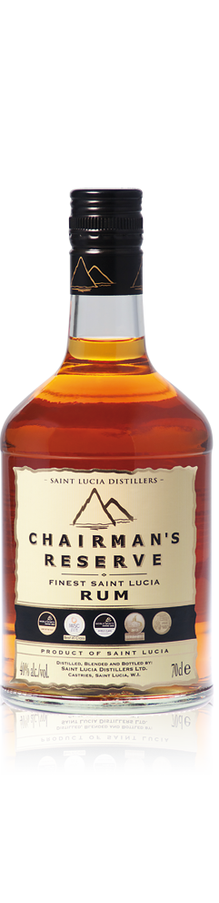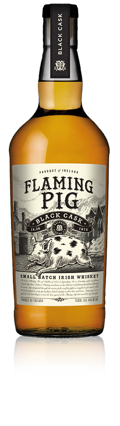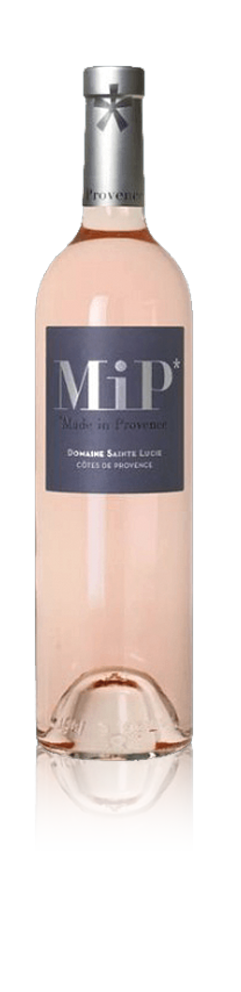